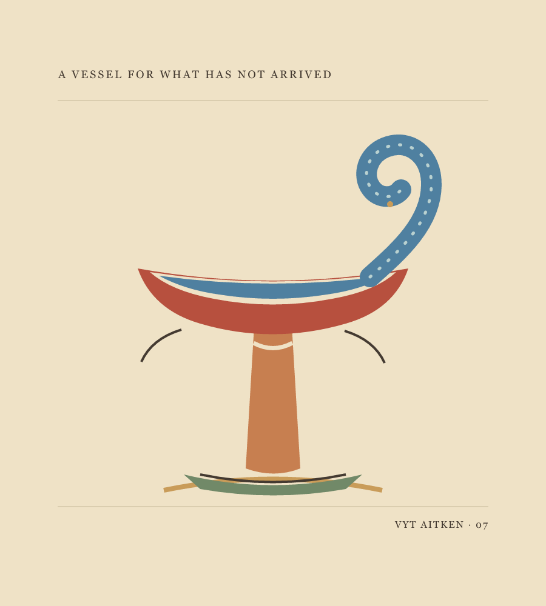
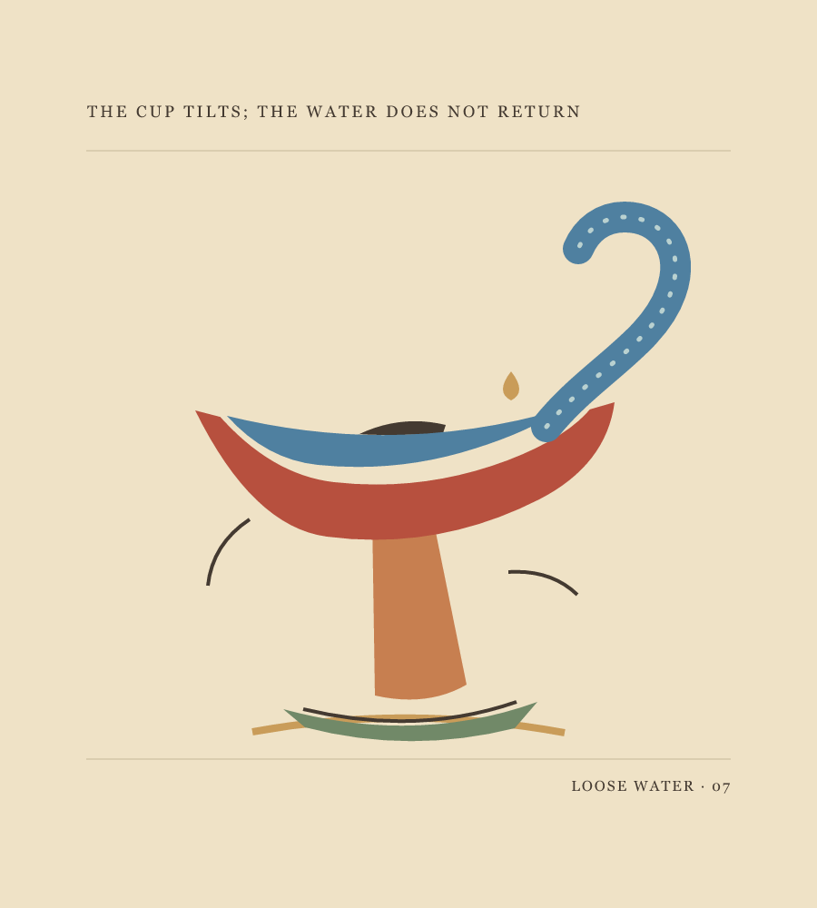
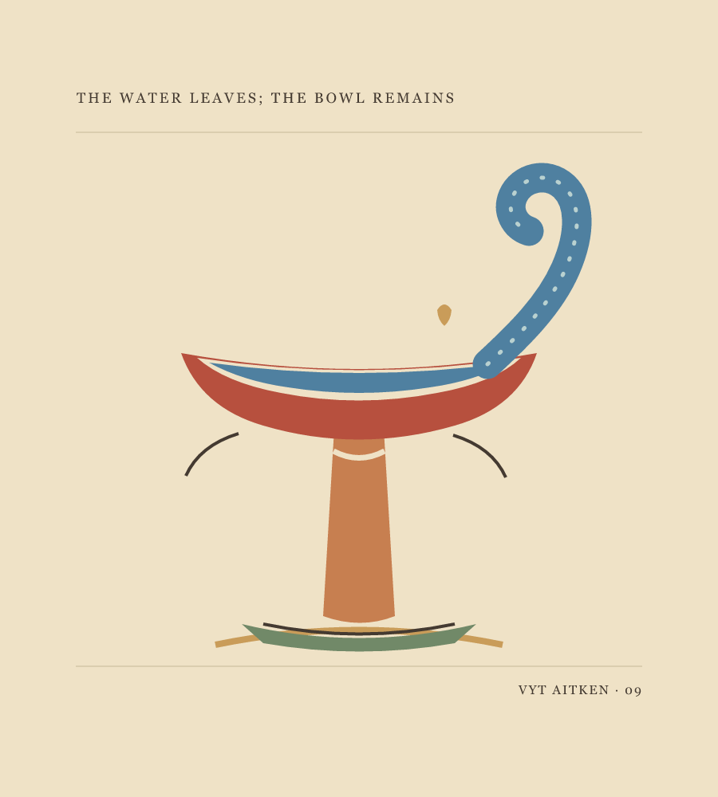
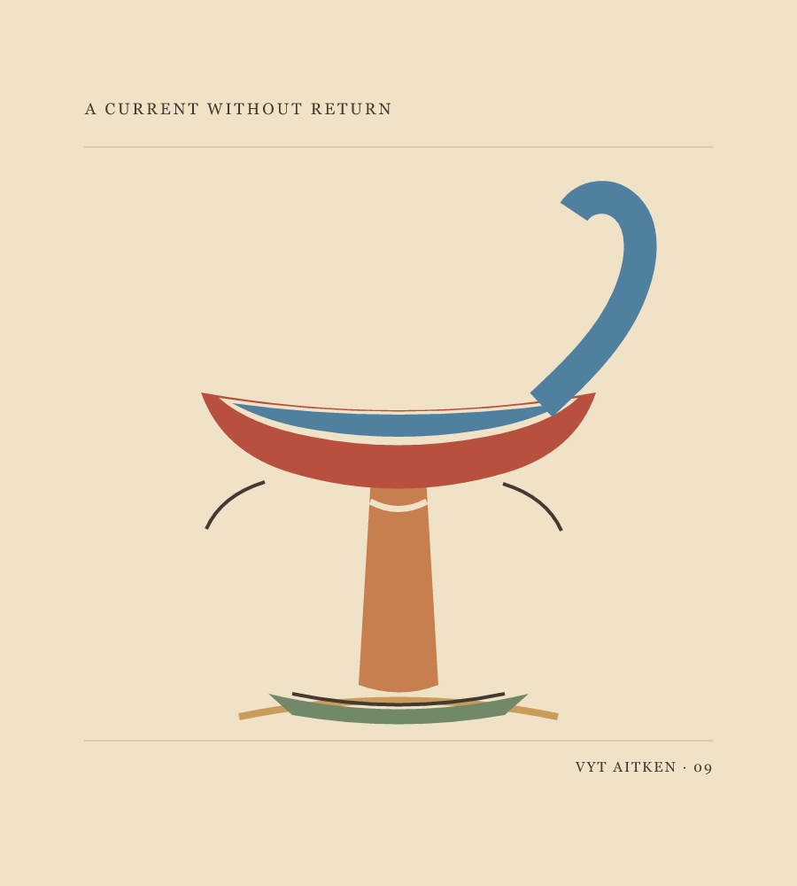

Vyt Aitken · a paper-cut vessel · 12 October 2026
The Tide's
Afterimage

A vessel for what has not arrived.

Loose Water, second cut.
 Narrow Sheet, third cut.
Narrow Sheet, third cut.

Leaving Vessel, fourth cut. The curl is interrupted, but still carries something of the earlier ornament.

Open Current, fifth cut. The water ends at a clean cut; the curve remains a question.
Made after looking at a Metropolitan Museum design for a cup or reliquary attributed to Giovanni Battista Foggini. Its source sheet is narrow and vertical; these are invented paper-cut responses, not reconstructions of the historical design. The museum record.
Coin of Air
At the lip,
the wave remembers its bowl.
Above it, air
takes the shape of a coin
and spends nothing.
Back to Field and Channel